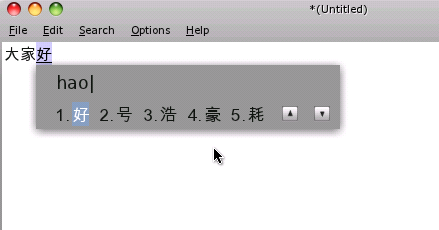
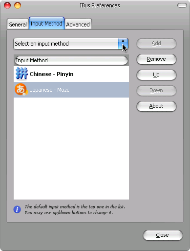
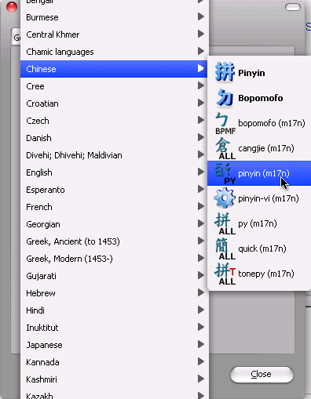

1.22. Chinesisch schreiben¶
Um Chinesisch in FreeBSD schreiben zu koennen braucht man einen Input Manager. Hier gibt es in den FreeBSD Ports gleich 3 davon
chinese/ibus-pinyin
chinese/fcitx
chinese/scim-pinyin
Der beliebteste scheint wohl fcitx unter den Chinesen zu sein, leider kann ich dort nicht von English auf Pinyin wechseln, von den anderen beiden bevorzuge ich persoehnlich den ibus-pinyin.
ibus-pinyin und scim-pinyin sind ueber ein grafisches Menu konfigurierbar, wobei fcitx nur eine Textdatei bietet, je nach Systemeinstellung auf chinesisch oder English.
Dieser Artikel beschaeftigt sich mit ibus/pinyin
1.22.1. Chinesische Zeichen eingeben¶
1.22.1.1. Vorschau¶
Hier mal eine kleine Vorschau wie das ganze dann mit dem ibus-pinyin aussieht

1.22.1.2. Programme¶
chinese/ibus-pinyin
Der Port wird den Input Manager Ibus (als dependency) und das Pinyin toolkit installieren
1.22.1.3. Konfiguration¶
### In der .bashrc wird dann folgendes hinzugefuegt
export GTK_IM_MODULE=ibus # for GTK Environment
export QT_IM_MODULE=ibus # for KDE Environment
export XMODIFIERS="@im=ibus" # other X Environment
### Nach einem anderem Tutorial sollte man das allerdings so setzen:
export GTK_IM_MODULE=xim
export QT_IM_MODULE=xim
export XMODIFIERS="@im=ibus"
export GDK_NATIVE_WINDOWS=true
Fuer fcitx oder scim muss man die XMODIFIERS respektiv setzen
export XMODIFIERS="@im=fcitx"
## oder
export XMODIFIERS="@im=scim"
Danach kann man in X seinen bevorzugten Input Manager starten und je nach Konfiguration mit <ctrl><shift> oder <ctrl><space> oder <ctrl><alt> das Pinyin overlay aufrufen
1.22.1.4. Fehlerteufel¶
Die Input Method laesst sich nicht aender.
Manche Programme (wie net-im/qq) setzen Vorraus, dass die Systemumgebung auf
LANG=zh_CN.UTF-8
gesetzt ist und falls nicht, laesst sich nicht zwischen den Sprachen wechseln.
Wenn man sein System aber weiterhin auf English haben moechte und trotzdem chinesisch schreiben moechte, dann kann man das umgehen in den man auf der shell (vor dem starten des Programms) einfach
export LANG=zh_CN.UTF-8
eingibt oder man kann ein shell script schreiben welches in etwa so aussieht
#!/bin/sh
export LANG=zh_CN.UTF-8
<program_name>
Was man dann anstelle des Programms startet
1.22.2. Pinyin Tonemarks eingeben¶
1.22.2.1. Vorwort¶
Mandarin nutzt 4 Verschiedene Tone, als Beispiel hier „ma“:
Tone 1: mā
Tone 2: má
Tone 3: mǎ
Tone 4: mà
Es ist hier wichtig zu wissen, welcher Ton welche nummer hat, da man spaeter die Eingabe wie folgt macht: ma1, ma2, ma3 oder ma4 und dieses wird dann wie oben umgewandelt
1.22.2.2. Programme¶
textproc/m17n-contrib/
Dieser Port enthaelt Benutzer Contributed Input Methods, nicht nur chinesisch, sondern eine ganze Menge mehr
1.22.2.3. Konfiguration¶
Ibus Einstellungen aufrufen, zum beispiel ueber
user> ibus-setup
Und dann im 2. Reiter auf Input Method und Select and Input Method

dann auf Pinyin (m17n)

Danach auf add